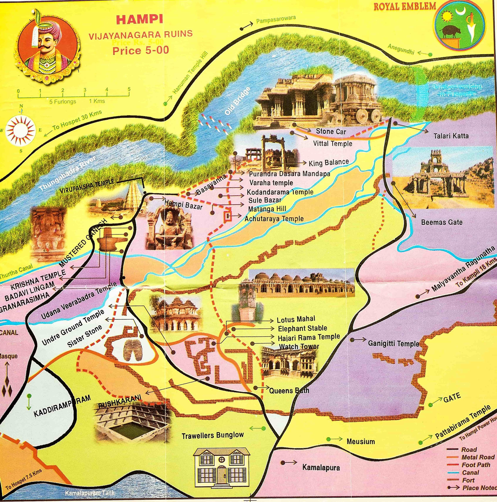

Last year has been nothing short of amazing as I have traveled to quite a few places and that too all within a pretty hectic 9 to 9 job. It was only when I went to Hampi and posted some insta stories that an old class fellow (read Muskan) suggested I should document my travels. And that is how the idea of this blog post came about.
This blog is for everyone who loves to travel, be it Hampi or no Hampi. While I'll dive deep into the history of Hampi and the cliched how to reach Hampi, what to expect etcetera etcetera, this is also for all those people who don't like to travel but like to understand things with new perspectives. Throughout the blog post, I'll share the deepest thoughts I journaled during this adventure. I hope it helps you broaden your perspective!
TL;DR - Hampi is a land of fantasy, of unearthly landscapes and fascinating rice fields, and even better history and monuments of the richest Hindu empire of the time – the Vijay nagaras. Situated on the mighty Tungabhadra river, it is present in Hosapete District of Karnataka and is a sight to behold. With its endless boulder landscapes, it also has the distinction of being a UNESCO World Heritage site for its collection of jaw-dropping monuments that now some people call ruins but actually find magnificent.
As can be seen on the map, Hampi is split into two parts – the ruins of the Vijayanagara empire and the hippie side which is famous among the youth for you know what. I personally do not find any fun in intoxication as the view on the other side itself provides enough anesthesia for inebriation. Now without wasting any more time, let's start with the Blog!
Built in the famous Nagara style architecture of Southern India, the tower is 165ft high and spans 150ft with a length of 120ft. It is not known who built it or when was it built but Krishnadeva Raya renovated it many times.
Fun fact: Krishnadeva Raya is the king you would have heard about in all those Tenali Raman Stories. Dedicated to lord Shiva, this is one of the oldest functioning temples of not only Hampi but India itself. Right next to the Hampi bazaar, the temple has no entry fees and if you visit on time you can also have a look at the Temple Elephant called – "Laxmi".
A curious question popped into my mind while visiting this temple – why of all the temples in Hampi, this was left during the invasions and is still functioning? I popped this question to my guide and to my surprise he did have an answer.
At the beginning of the temple, there is the flag of the Vijayanagara Empire on a pillar, and unlike other Hindu empires, it didn't have the Sun or the Lion but a Pig instead. And since most of the invasions were from Islamic rulers, places with pig inscriptions were spared!
In all honesty, I still don't know the veracity of this fact but that's what makes history interesting – it's all about forming perspectives with something that doesn't exist anymore.
A lot of the people visit the temple but don't care to look up? Up there on the ceiling are beautiful paintings from Ramayana, the great Indian epic.
Seeing the stories of Ramayana engraved over the temples on the other end of India led to a very different perspective about India. I Always wondered how India flourishes together as a country. To think of it - North India has no connection to South India through language, architecture, or even culture to some extent but it still feels one and familiar.
That reason I think is Hinduism No matter which part of India we go to — each place has its own legends of Ramayana and Mahabharata.
The idea of India ceases to exist without Hinduism?
A huge monolithic Ganpathi idol is installed in this temple and is a sight to behold. What's even more interesting is the Romanesque pillars of the temple which make you feel like you are there in ancient Greece, especially with those clear skies of Hampi.
Does it tell us something about the globalization during the Vijayanagara Empire? There are already records of trades from all over the world in Hampi and can be aptly seen from the architectural inspirations!
Not a very famous site and not covered by many bloggers – but I found this one of the most memorable ruins in Hampi. Maybe the picture will say it all:
The reason for a curious name like this for such an important street is a mystery. However, this name is mentioned in an inscription of Devaraya II, confirming the name's authenticity. On the lighter side, you'll see a great deal of areca nut plantations near the Royal Center!
Legend has it that traders from all over the world used to come here to trade all kinds of spices and other things - making Hampi the second richest city in the world of its time!
Royal enclosure is a complex and the seat of the mighty Vijayanagara empire. In it’s prime the enclosure housed 45 buildings that also had the great platform, durbal halls, tanks, and underground chambers.
Right now it has three main sites:
The great platformThis is a raised platform with a majestic view. Legend has this that the platform was used by the king to see Dussehra/Navrati celebrations back then. On the lower sidewall of the structure, you’ll also find many war carvings.
And hey, I also made really good friends on this new (great) platform!
Again my curiosity led me to ask my new friends what they are doing travelling as a female group in Hampi, since we see so few female travellers in India. On probing them I found that the new government change has allowed free travel across Karnataka for ladies in public buses.
And therefore I could see hordes of middle aged females travelling independently in Hampi. To think of it, if one free scheme can enable women to travel freely, what would more women in workforce do to women mobility and freedom?
I do not have any photos of this because it was underground and no light was there. Moreover, it was used to question spies and so any information about it could land me in trouble, right?
The Stepped TankThis is 5 to 6 tier super symmetrical structure which you would want to call “Aesthetic” in pure genz lingo. The stepwell was used by the royalty to take baths and purify themselves before any rituals/prayers. The black schist stones used to make the stepwell ensure that the water is heated and purified.
Built in the shape of eponymous lotus, this structure is example of indo-islamic architecture of Vijayanagara empire and was used to house the royal muslim women of the empire.
The larger the empire, the larger is it’s elephantry. So it’s only natural that a place should be there for the mighty creatures to reside. This long structure was used to provide shelter to the elephants and has domes in all Hindu, muslim, and Jain architecture.
This temple is dedicated to Lord Narsimha, who is one of ten avatars of Vishnu. You might be surprised that this is a monolith statue and the largest one too!
A note to the reader
In this blog I’ll try to cover only the side of Hampi that deals with Vijaynagara empire, that is one side of the river. Hampi is so marvellous that writing it all in one blog won’t do justice to the place and the legend. The blog is about to end very quickly but I'll be back with the second part very soon.
The stone chariott at Vitthala Temple complex is the famous stone chariot that you see behind the 50 Rupees note. This dravidian architectural marvel was commissioned by KrishnaDeva Raya after he got fascinated with the chariott at Konark Temple right after winning a war in Odisha.
Alright folks, that’s it from my end about Day 1 in Hampi. I’ll see you in another blog post for Day 2, 3 and counting!
Okay, wait - what about the eateries, how to reach etc part? I’m a man of my words, so there you go:
Given the magical nature of Hampi, you can also go via Platform Nine and a three quarters.
For muggles, here is what I would suggest:
By TrainHampi does not have a railway station. The nearest Railway station is Hospet, which is around 12 km from Hampi.
There are direct trains from Mysore and Bangalore for Hospet. The best option will be to take “Hampi Express” which starts from Mysore and goes to Hampi via Bangalore. The train starts from Mysore at 6:40 PM, reaches Bangalore city Junction around 10 PM and reaches Hospet around 7:00 PM.
For Hospet to Hampi, you can take either a tuk-tuk (INR 250-INR 300) or local bus (INR 20). The buses run from 6:00 AM till 10:30 in the night.
By BusThere are direct buses for Hampi/ Hospet from Mysore, Goa, Mumbai, Bangalore and Gokarna. The bus will cost anywhere between INR 1,000 to 2,000 depending on the type you are opting (sleeper/ semi sleeper/ non-sleeper) for.
While travelling by bus, be ready for a bumpy ride! Check out all the bus options here – www.redbus.com
By FlightHampi does not have an airport. The nearest airport is Hubli which is around 150 km away from Hampi. You will need to hire a taxi from Hubli airport to reach Hampi.
You can also take a flight to bangalore and then travel by bus from bangalore.
I'm not much of a foodie so I'll be of little help here.
Rest assured, there are a lot of good cafes and local markets in Hampi that you can spend some time at. Listing down some good eateries in no particular order here:
Okay folks, this was it. Until next time!
A big thank you to Muskan for inspiring me to write this blog. While Hampi is not the first blog on my website, this whole website blog started with the idea to write a blog on Hampi.